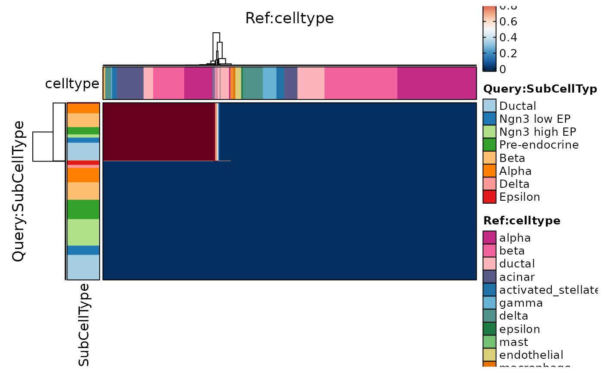

This function generates a heatmap to visualize the similarity between different cell types or conditions. It takes in Seurat objects or expression matrices as input and calculates pairwise similarities or distance.
Usage
CellCorHeatmap(
srt_query,
srt_ref = NULL,
bulk_ref = NULL,
query_group = NULL,
ref_group = NULL,
query_assay = NULL,
ref_assay = NULL,
query_reduction = NULL,
ref_reduction = NULL,
query_dims = 1:30,
ref_dims = 1:30,
query_collapsing = !is.null(query_group),
ref_collapsing = TRUE,
features = NULL,
features_type = c("HVF", "DE"),
feature_source = "both",
nfeatures = 2000,
DEtest_param = list(max.cells.per.ident = 200, test.use = "wilcox"),
DE_threshold = "p_val_adj < 0.05",
distance_metric = "cosine",
k = 30,
filter_lowfreq = 0,
prefix = "KNNPredict",
exp_legend_title = NULL,
border = TRUE,
flip = FALSE,
limits = NULL,
cluster_rows = FALSE,
cluster_columns = FALSE,
show_row_names = FALSE,
show_column_names = FALSE,
row_names_side = "left",
column_names_side = "top",
row_names_rot = 0,
column_names_rot = 90,
row_title = NULL,
column_title = NULL,
row_title_side = "left",
column_title_side = "top",
row_title_rot = 90,
column_title_rot = 0,
nlabel = 0,
label_cutoff = 0,
label_by = "row",
label_size = 10,
heatmap_palette = "RdBu",
heatmap_palcolor = NULL,
query_group_palette = "Paired",
query_group_palcolor = NULL,
ref_group_palette = "simspec",
ref_group_palcolor = NULL,
query_cell_annotation = NULL,
query_cell_annotation_palette = "Paired",
query_cell_annotation_palcolor = NULL,
query_cell_annotation_params = if (flip) list(height = unit(10, "mm")) else list(width
= unit(10, "mm")),
ref_cell_annotation = NULL,
ref_cell_annotation_palette = "Paired",
ref_cell_annotation_palcolor = NULL,
ref_cell_annotation_params = if (flip) list(width = unit(10, "mm")) else list(height =
unit(10, "mm")),
use_raster = NULL,
raster_device = "png",
raster_by_magick = FALSE,
height = NULL,
width = NULL,
units = "inch",
seed = 11,
ht_params = list()
)Arguments
- srt_query
A Seurat object or count matrix representing the query dataset. This dataset will be used to calculate the similarities between cells.
- srt_ref
A Seurat object or count matrix representing the reference dataset. If provided, the similarities will be calculated between cells from the query and reference datasets. If not provided, the similarities will be calculated within the query dataset.
- bulk_ref
A count matrix representing bulk data. If provided, the similarities will be calculated between cells from the query dataset and bulk data.
- query_group
The grouping variable in the query dataset. This variable will be used to group cells in the heatmap rows. If not provided, all cells will be treated as one group.
- ref_group
The grouping variable in the reference dataset. This variable will be used to group cells in the heatmap columns. If not provided, all cells will be treated as one group.
- query_assay
The assay to use for the query dataset. If not provided, the default assay of the query dataset will be used.
- ref_assay
The assay to use for the reference dataset. If not provided, the default assay of the reference dataset will be used.
- query_reduction
The dimensionality reduction method to use for the query dataset. If not provided, no dimensionality reduction will be applied to the query dataset.
- ref_reduction
The dimensionality reduction method to use for the reference dataset. If not provided, no dimensionality reduction will be applied to the reference dataset.
- query_dims
The dimensions to use for the query dataset. If not provided, the first 30 dimensions will be used.
- ref_dims
The dimensions to use for the reference dataset. If not provided, the first 30 dimensions will be used.
- query_collapsing
Whether to collapse cells within each query group before calculating similarities. If set to TRUE, the similarities will be calculated between query groups rather than individual cells.
- ref_collapsing
Whether to collapse cells within each reference group before calculating similarities. If set to TRUE, the similarities will be calculated between reference groups rather than individual cells.
- features
A vector of feature names to include in the heatmap. If not provided, a default set of highly variable features (HVF) will be used.
- features_type
The type of features to use. Options are "HVF" for highly variable features, "DE" for differentially expressed features between query and reference groups.
- feature_source
The source of features to use. Options are "query" to use only features from the query dataset, "ref" to use only features from the reference dataset, or "both" to use features from both datasets. If not provided or set to "both", features will be selected from both datasets.
- nfeatures
The maximum number of features to include in the heatmap. If not provided, the default is 2000.
- DEtest_param
The parameters to use for differential expression testing. This should be a list with two elements: "max.cells.per.ident" specifying the maximum number of cells per group for differential expression testing, and "test.use" specifying the statistical test to use for differential expression testing. If not provided, the default parameters will be used.
- DE_threshold
The threshold for differential expression. Only features with adjusted p-values below this threshold will be considered differentially expressed.
- distance_metric
The distance metric to use for calculating similarities between cells. This can be any of the following: "cosine", "pearson", "spearman", "correlation", "jaccard", "ejaccard", "dice", "edice", "hamman", "simple matching", or "faith". If not provided, the default is "cosine".
- k
The number of nearest neighbors to use for calculating similarities. If not provided, the default is 30.
- filter_lowfreq
The minimum frequency threshold for selecting query dataset features. Features with a frequency below this threshold will be excluded from the heatmap. If not provided, the default is 0.
- prefix
The prefix to use for the KNNPredict tool slot in the query dataset. This can be used to avoid conflicts with other tools in the Seurat object. If not provided, the default is "KNNPredict".
- exp_legend_title
The title for the color legend in the heatmap. If not provided, a default title based on the similarity metric will be used.
- border
Whether to add a border around each heatmap cell. If not provided, the default is TRUE.
- flip
Whether to flip the orientation of the heatmap. If set to TRUE, the rows and columns of the heatmap will be swapped. This can be useful for visualizing large datasets in a more compact form. If not provided, the default is FALSE.
- limits
The limits for the color scale in the heatmap. If not provided, the default is to use the range of similarity values.
- cluster_rows
Whether to cluster the rows of the heatmap. If set to TRUE, the rows will be rearranged based on hierarchical clustering. If not provided, the default is FALSE.
- cluster_columns
Whether to cluster the columns of the heatmap. If set to TRUE, the columns will be rearranged based on hierarchical clustering. If not provided, the default is FALSE.
- show_row_names
Whether to show the row names in the heatmap. If not provided, the default is FALSE.
- show_column_names
Whether to show the column names in the heatmap. If not provided, the default is FALSE.
- row_names_side
The side of the heatmap to show the row names. Options are "left" or "right". If not provided, the default is "left".
- column_names_side
The side of the heatmap to show the column names. Options are "top" or "bottom". If not provided, the default is "top".
- row_names_rot
The rotation angle of the row names. If not provided, the default is 0 degrees.
- column_names_rot
The rotation angle of the column names. If not provided, the default is 90 degrees.
- row_title
The title for the row names in the heatmap. If not provided, the default is to use the query grouping variable.
- column_title
The title for the column names in the heatmap. If not provided, the default is to use the reference grouping variable.
- row_title_side
The side of the heatmap to show the row title. Options are "top" or "bottom". If not provided, the default is "left".
- column_title_side
The side of the heatmap to show the column title. Options are "left" or "right". If not provided, the default is "top".
- row_title_rot
The rotation angle of the row title. If not provided, the default is 90 degrees.
- column_title_rot
The rotation angle of the column title. If not provided, the default is 0 degrees.
- nlabel
The maximum number of labels to show on each side of the heatmap. If set to 0, no labels will be shown. This can be useful for reducing clutter in large heatmaps. If not provided, the default is 0.
- label_cutoff
The similarity cutoff for showing labels. Only cells with similarity values above this cutoff will have labels. If not provided, the default is 0.
- label_by
The dimension to use for labeling cells. Options are "row" to label cells by row, "column" to label cells by column, or "both" to label cells by both row and column. If not provided, the default is "row".
- label_size
The size of the labels in points. If not provided, the default is 10.
- heatmap_palette
The color palette to use for the heatmap. This can be any of the palettes available in the circlize package. If not provided, the default is "RdBu".
- heatmap_palcolor
The specific colors to use for the heatmap palette. This should be a vector of color names or RGB values. If not provided, the default is NULL.
- query_group_palette
The color palette to use for the query group legend. This can be any of the palettes available in the circlize package. If not provided, the default is "Paired".
- query_group_palcolor
The specific colors to use for the query group palette. This should be a vector of color names or RGB values. If not provided, the default is NULL.
- ref_group_palette
The color palette to use for the reference group legend. This can be any of the palettes available in the circlize package. If not provided, the default is "simspec".
- ref_group_palcolor
The specific colors to use for the reference group palette. This should be a vector of color names or RGB values. If not provided, the default is NULL.
- query_cell_annotation
A vector of cell metadata column names or assay feature names to use for highlighting specific cells in the heatmap. Each element of the vector will create a separate cell annotation track in the heatmap. If not provided, no cell annotations will be shown.
- query_cell_annotation_palette
The color palette to use for the query cell annotation tracks. This can be any of the palettes available in the circlize package. If a single color palette is provided, it will be used for all cell annotation tracks. If multiple color palettes are provided, each track will be assigned a separate palette. If not provided, the default is "Paired".
- query_cell_annotation_palcolor
The specific colors to use for the query cell annotation palettes. This should be a list of vectors, where each vector contains the colors for a specific cell annotation track. If a single color vector is provided, it will be used for all cell annotation tracks. If multiple color vectors are provided, each track will be assigned a separate color vector. If not provided, the default is NULL.
- query_cell_annotation_params
Additional parameters for customizing the appearance of the query cell annotation tracks. This should be a list with named elements, where the names correspond to parameter names in the heatmaps_annotation() function from the ComplexHeatmap package. If not provided, the default parameters will be used.
- ref_cell_annotation
A vector of cell metadata column names or assay feature names to use for highlighting specific cells in the heatmap. Each element of the vector will create a separate cell annotation track in the heatmap. If not provided, no cell annotations will be shown.
- ref_cell_annotation_palette
The color palette to use for the reference cell annotation tracks. This can be any of the palettes available in the circlize package. If a single color palette is provided, it will be used for all cell annotation tracks. If multiple color palettes are provided, each track will be assigned a separate palette. If not provided, the default is "Paired".
- ref_cell_annotation_palcolor
The specific colors to use for the reference cell annotation palettes. This should be a list of vectors, where each vector contains the colors for a specific cell annotation track. If a single color vector is provided, it will be used for all cell annotation tracks. If multiple color vectors are provided, each track will be assigned a separate color vector. If not provided, the default is NULL.
- ref_cell_annotation_params
Additional parameters for customizing the appearance of the reference cell annotation tracks. This should be a list with named elements, where the names correspond to parameter names in the heatmaps_annotation() function from the ComplexHeatmap package. If not provided, the default parameters will be used.
- use_raster
Whether to use raster images for rendering the heatmap. If set to TRUE, the heatmap will be rendered as a raster image using the raster_device argument. If not provided, the default is determined based on the number of rows and columns in the heatmap.
- raster_device
The raster device to use for rendering the heatmap. This should be a character string specifying the device name, such as "png", "jpeg", or "pdf". If not provided, the default is "png".
- raster_by_magick
Whether to use the magick package for rendering rasters. If set to TRUE, the magick package will be used instead of the raster package. This can be useful for rendering large heatmaps more efficiently. If the magick package is not installed, this argument will be ignored.
- height
The height of the heatmap in the specified units. If not provided, the height will be automatically determined based on the number of rows in the heatmap and the default unit.
- width
The width of the heatmap in the specified units. If not provided, the width will be automatically determined based on the number of columns in the heatmap and the default unit.
- units
The units to use for the width and height of the heatmap. Options are "mm", "cm", or "inch". If not provided, the default is "inch".
- seed
The random seed to use for reproducible results. If not provided, the default is 11.
- ht_params
Additional parameters to customize the appearance of the heatmap. This should be a list with named elements, where the names correspond to parameter names in the Heatmap() function from the ComplexHeatmap package. Any conflicting parameters will override the defaults set by this function.
Value
A list with the following elements:
plotThe heatmap plot as a ggplot object.featuresThe features used in the heatmap.simil_matrixThe similarity matrix used to generate the heatmap.simil_nameThe name of the similarity metric used to generate the heatmap.cell_metadataThe cell metadata used to generate the heatmap.
Examples
data("pancreas_sub")
pancreas_sub <- Standard_SCP(pancreas_sub)
#> [2025-09-08 14:32:56.075813] Start Standard_SCP
#> [2025-09-08 14:32:56.076853] Checking srtList... ...
#> Warning: The `slot` argument of `GetAssayData()` is deprecated as of SeuratObject 5.0.0.
#> ℹ Please use the `layer` argument instead.
#> ℹ The deprecated feature was likely used in the SCP package.
#> Please report the issue to the authors.
#> Data 1/1 of the srtList is raw_counts. Perform NormalizeData(LogNormalize) on the data ...
#> Warning: The `slot` argument of `SetAssayData()` is deprecated as of SeuratObject 5.0.0.
#> ℹ Please use the `layer` argument instead.
#> ℹ The deprecated feature was likely used in the Seurat package.
#> Please report the issue at <https://github.com/satijalab/seurat/issues>.
#> Perform FindVariableFeatures on the data 1/1 of the srtList...
#> Use the separate HVF from srtList...
#> Number of available HVF: 2000
#> [2025-09-08 14:32:57.141427] Finished checking.
#> [2025-09-08 14:32:57.141613] Perform ScaleData on the data...
#> [2025-09-08 14:32:57.279886] Perform linear dimension reduction (pca) on the data...
#> Warning: The following arguments are not used: force.recalc
#> Warning: The following arguments are not used: force.recalc
#> [2025-09-08 14:32:57.972898] Perform FindClusters (louvain) on the data...
#> [2025-09-08 14:32:58.048112] Reorder clusters...
#> As of Seurat v5, we recommend using AggregateExpression to perform pseudo-bulk analysis.
#> This message is displayed once per session.
#> First group.by variable `ident` starts with a number, appending `g` to ensure valid variable names
#> This message is displayed once every 8 hours.
#> [2025-09-08 14:32:58.157025] Perform nonlinear dimension reduction (umap) on the data...
#> Non-linear dimensionality reduction(umap) using Reduction(Standardpca, dims:1-13) as input
#> Non-linear dimensionality reduction(umap) using Reduction(Standardpca, dims:1-13) as input
#> [2025-09-08 14:33:04.842778] Standard_SCP done
#> Elapsed time: 8.77 secs
ht1 <- CellCorHeatmap(srt_query = pancreas_sub, query_group = "SubCellType")
#> Use the HVF to calculate distance metric.
#> Use 2000 features to calculate distance.
#> Detected query data type: log_normalized_counts
#> Detected reference data type: log_normalized_counts
#> Calculate similarity...
#> Use 'raw' method to find neighbors.
#> Predict cell type...
#> Error: No cell overlap between new meta data and Seurat object
ht1$plot
#> Error: object 'ht1' not found
data("panc8_sub")
# Simply convert genes from human to mouse and preprocess the data
genenames <- make.unique(capitalize(rownames(panc8_sub), force_tolower = TRUE))
panc8_sub <- RenameFeatures(panc8_sub, newnames = genenames)
#> Rename features for the assay: RNA
panc8_sub <- check_srtMerge(panc8_sub, batch = "tech")[["srtMerge"]]
#> [2025-09-08 14:33:05.973382] Spliting srtMerge into srtList by column tech... ...
#> [2025-09-08 14:33:06.189007] Checking srtList... ...
#> Data 1/5 of the srtList is raw_normalized_counts. Perform NormalizeData(LogNormalize) on the data ...
#> Perform FindVariableFeatures on the data 1/5 of the srtList...
#> Data 2/5 of the srtList is raw_normalized_counts. Perform NormalizeData(LogNormalize) on the data ...
#> Perform FindVariableFeatures on the data 2/5 of the srtList...
#> Data 3/5 of the srtList is raw_normalized_counts. Perform NormalizeData(LogNormalize) on the data ...
#> Perform FindVariableFeatures on the data 3/5 of the srtList...
#> Data 4/5 of the srtList is raw_counts. Perform NormalizeData(LogNormalize) on the data ...
#> Perform FindVariableFeatures on the data 4/5 of the srtList...
#> Data 5/5 of the srtList is raw_counts. Perform NormalizeData(LogNormalize) on the data ...
#> Perform FindVariableFeatures on the data 5/5 of the srtList...
#> Use the separate HVF from srtList...
#> Number of available HVF: 2000
#> [2025-09-08 14:33:10.309175] Finished checking.
ht2 <- CellCorHeatmap(
srt_query = pancreas_sub, srt_ref = panc8_sub, nlabel = 3, label_cutoff = 0.6,
query_group = "SubCellType", ref_group = "celltype",
query_cell_annotation = "Phase", query_cell_annotation_palette = "Set2",
ref_cell_annotation = "tech", ref_cell_annotation_palette = "Set3",
width = 4, height = 4
)
#> Use the HVF to calculate distance metric.
#> Use 631 features to calculate distance.
#> Names of identity class contain underscores ('_'), replacing with dashes ('-')
#> This message is displayed once every 8 hours.
#> Detected query data type: log_normalized_counts
#> Detected reference data type: log_normalized_counts
#> Calculate similarity...
#> Use 'raw' method to find neighbors.
#> Predict cell type...
#> Error: No cell overlap between new meta data and Seurat object
ht2$plot
#> Error: object 'ht2' not found
ht3 <- CellCorHeatmap(
srt_query = pancreas_sub, srt_ref = panc8_sub,
query_group = "SubCellType", query_collapsing = FALSE, cluster_rows = TRUE,
ref_group = "celltype", ref_collapsing = FALSE, cluster_columns = TRUE
)
#> Use the HVF to calculate distance metric.
#> Use 631 features to calculate distance.
#> Detected query data type: log_normalized_counts
#> Detected reference data type: log_normalized_counts
#> Calculate similarity...
#> Use 'raw' method to find neighbors.
#> Predict cell type...
ht3$plot

ht4 <- CellCorHeatmap(
srt_query = pancreas_sub, srt_ref = panc8_sub,
show_row_names = TRUE, show_column_names = TRUE,
query_group = "SubCellType", ref_group = "celltype",
query_cell_annotation = c("Sox9", "Rbp4", "Gcg"),
ref_cell_annotation = c("Sox9", "Rbp4", "Gcg")
)
#> Use the HVF to calculate distance metric.
#> Use 631 features to calculate distance.
#> Detected query data type: log_normalized_counts
#> Detected reference data type: log_normalized_counts
#> Calculate similarity...
#> Use 'raw' method to find neighbors.
#> Predict cell type...
#> Error: No cell overlap between new meta data and Seurat object
ht4$plot
#> Error: object 'ht4' not found